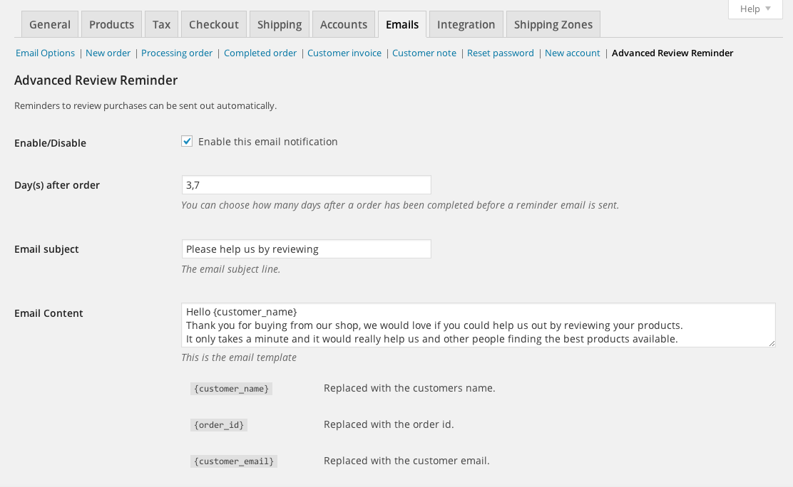
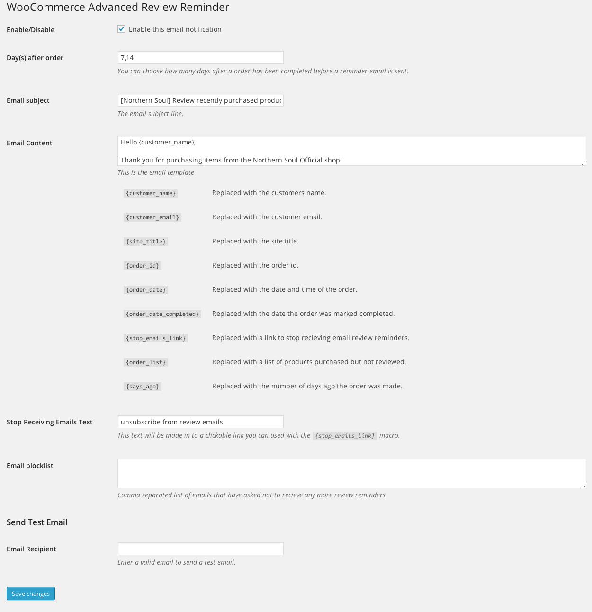
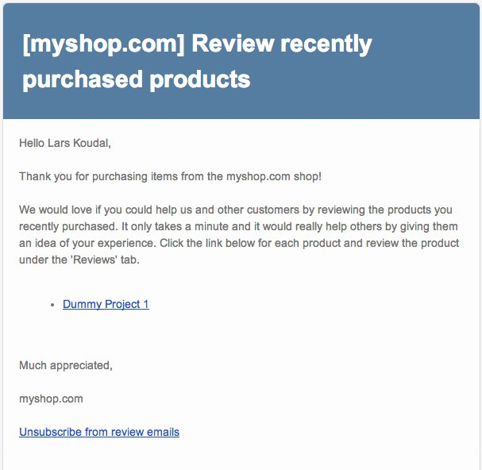
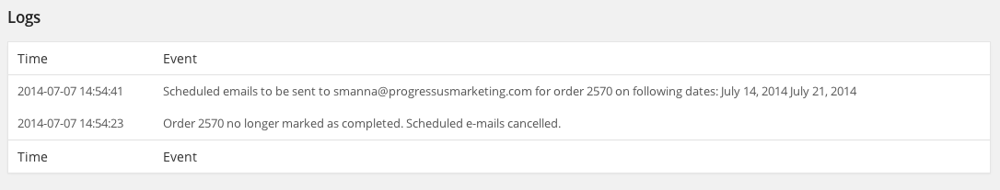
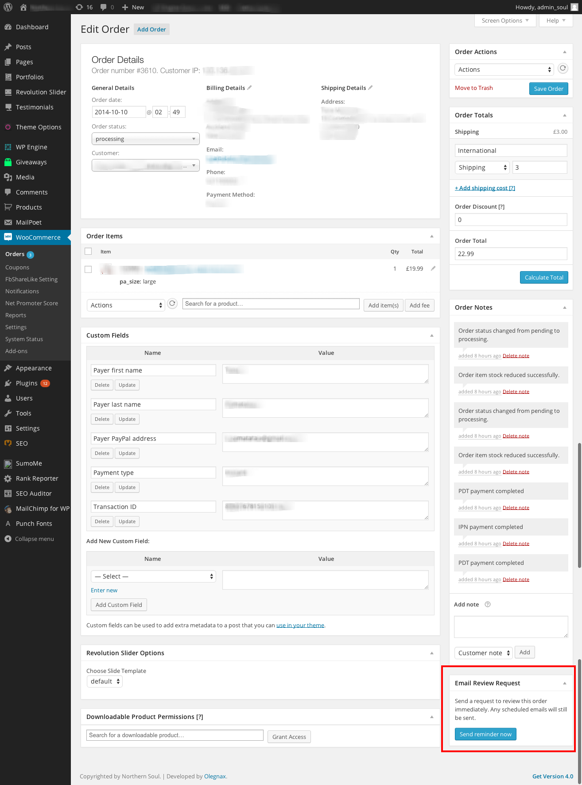

“WooCommerce Advanced Review Reminder” Documentation by “Kodemann.com” v1.1
“WooCommerce Advanced Review Reminder”
Thank you for purchasing our plugin. If you have any questions that are beyond the scope of this help file, please feel free to email via the user page contact form here. Thanks so much!
Instructional Video
Table of Contents
- Description
- Quick Start
- Installation
- Configuration
- Review Email
- How it works/debugging
- Manual Emails
A) Description - top
WooCommerce Advanced Review Reminder helps you get customer reviews to your webshop from customers who recently purchased a product from your shop. Reminder emails are sent to your customers asking them to review the recent product(s) they purchased.
Here are the major features you receive with Woocommerce Advanced Review Reminder plugin:
- Send a friendly email reminder automatically after they purchase and ask for a review.
- You can configure as many reminder emails as you want and set them to be sent X number of days after the purchase date.
- Personalized each email by using the predefined email macros.
- Customers can unsubscribe from the email review reminders so they do not get emailed again.
- The sent email use WooCommerce’s email templates to keep a consistent look and feel to your emails.
B) Quick Start - top
- Install and activate the plugin, see Installation.
- There is nothing else you need to do for the reminder review emails to be sent out, by default two reminder emails are sent 1 and 2 weeks after purchase.
- If you would like to modify when and how many emails are sent as well as the email text, see Configuration.
C) Installation - top
- Upload the "woocommerce-advanced-review-reminder" folder to the /wp-content/plugins/ directory
- Activate the "WooCommerce Advanced Review Reminder" plugin through the 'Plugins' menu in WordPress
- Configure the plugin by going to the "WooCommerce->Settings" menu, in the "Emails" tab under the "Advanced Review Reminder" section

D) Configuration - top
This help section will walk you through each plugin settings option.
- Enable/Disable - Enabling the advanced review reminder will schedule emails to be sent to your clients once the order status is marked 'Completed'. Disabling the plugin will ensure no emails are sent to your clients.
- Day(s) after order - Enter number values representing the days after which the email will be sent. You can enter as many values as you want seperated by commas and for each value an email will be sent X amount of days after the order was marked 'Completed'.
NOTE: Once a customer completes a review for a given product they will no longer be emailed to review that specific product, but will continue to receive emails for other products within the same order!
- Email subject - The subject line your customer will receive for the review reminder email.
- Email content - The content of the review reminder email. Within the email subject and content you can use the following macros that can personalize the email to each of your customers:
- {customer_name} - Replaced with the customers full name.
- {customer_firstname} - Replaced with the customers first name.
- {customer_lastname} - Replaced with the customers last name.
- {order_id} - Replaced with the order id.
- {customer_email} - Replaced with the customer email.
- {site_title} - Replaced the the title of the site.
- {order_date} - Replaced with the date and time of the order.
- {order_date_completed} - Replaced with the date the order was marked completed.
- {stop_emails_link} - Replaced with a link to stop recieving email review reminders.
- {order_list} - Replaced with a list of products purchased but not reviewed.
- {days_ago} - Replaced with the number of days ago the order was made.
- Stop Receiving Emails Text - This is the anchor text within the email review unsubscribe link. If a customer clicks the email review unsubscribe link, they will be placed in the "Email blocklist".
- Email blocklist - This is an email blocklist i.e. the customers in this comma seperated list will not be emailed. You can also manually add or remove anyone from this list.
- Send Test email - Enter a valid email in the "Email Recipient" field and click "Save changes" to send the test email.

Click the "Save changes" button at the end of the page once any setting is modified.
E) Review Email - top
The review reminder email utilizes the configured WooCommerce email template by default. See example below:

F) How the plugin works / debugging - top
The plugin works by monitoring when an order has been marked as "complete". This is the trigger that assumes a product has been sent. For virtual products this happens immediately as there is no shipping involved.
The plugin creates individual non-repeatable WordPress cronjobs. The date and time the emails are sent are defined from the plugin settings.
In version 1.2 we created a debug log on the bottom of the plugin admin page to monitor the plugin activity. Here are the possible log entries:
NOTE: If you are upgrading the plugin version you MUST disable and then enable the plugin to create the necessary logging database tables first in order to view the logs.
- Order x marked as completed. Scheduled emails to be sent to (email) on following dates: (send dates) - This will be logged if an order status is changed to "Completed" from another status, and will schedule emails to be sent to the customer.
- (Order x) E-mail sent to (email) - Day (days after order) reminder. - This will be logged once an email is sent to a customer for an order and the days after the order was marked "Competed".
- Order x has changed status. Not completed, no e-mails scheduled. - This will be logged if an order status is changed from "Completed" to another status, so no emails will be sent to the customer.
- (email) was added to the blocklist. - This will be logged if a customer asked to unsubscribe from the review reminder emails.

To further debug and verify emails are scheduled and sent we recommend the following plugins:
G) Manual Emails - top
Under WooCommerce -> Orders, select an order and in the bottom right corner you will find a metabox called "Email Review Request". If you click the button within the metabox an email will be sent requesting a review for the given order.
Note: Any scheduled emails will still be sent.

Once again, thank you so much for purchasing this plugin. Please leave us a comment on the plugin page and don't forget to review the plugin!
Kodemann
Go To Table of Contents